Retrospektivität
Wir betrachten die Vergangenheit immer im Nachhinein, aus der Gegenwart heraus.
Drei Zeitstrahlen von 1918 bis 1991 – untersucht mit der kognitiven Landkarte des Geschichtsunterrichts. Über der Linie stehen die Daten, die du kennen solltest, darunter die Module.
1
1918 – 1933
Die erste deutsche Demokratie. Die Module zu diesem Kapitel entstehen gerade.
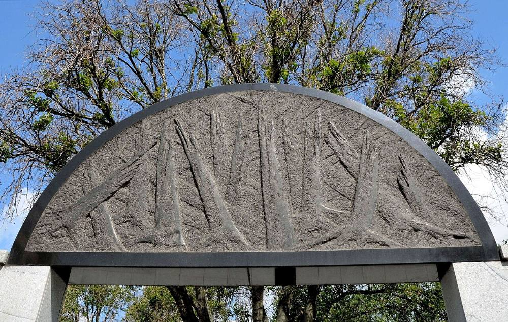
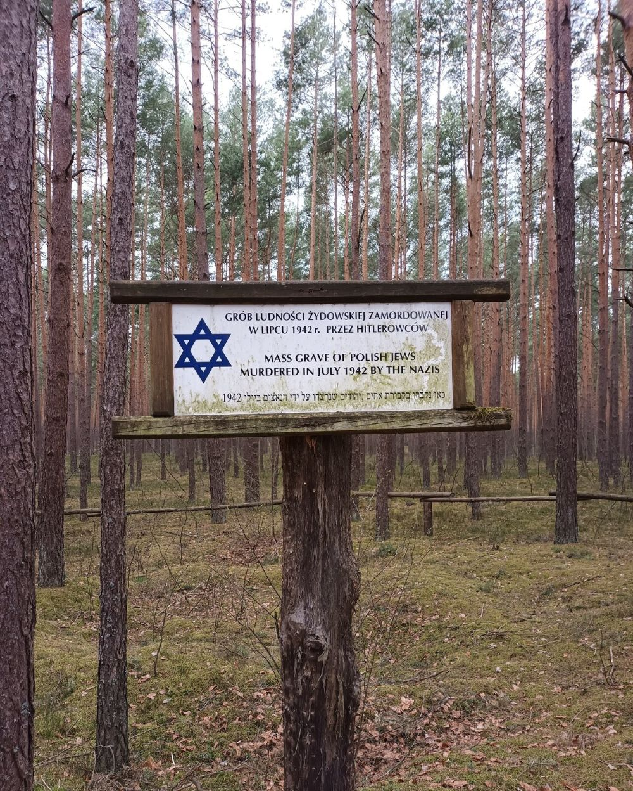
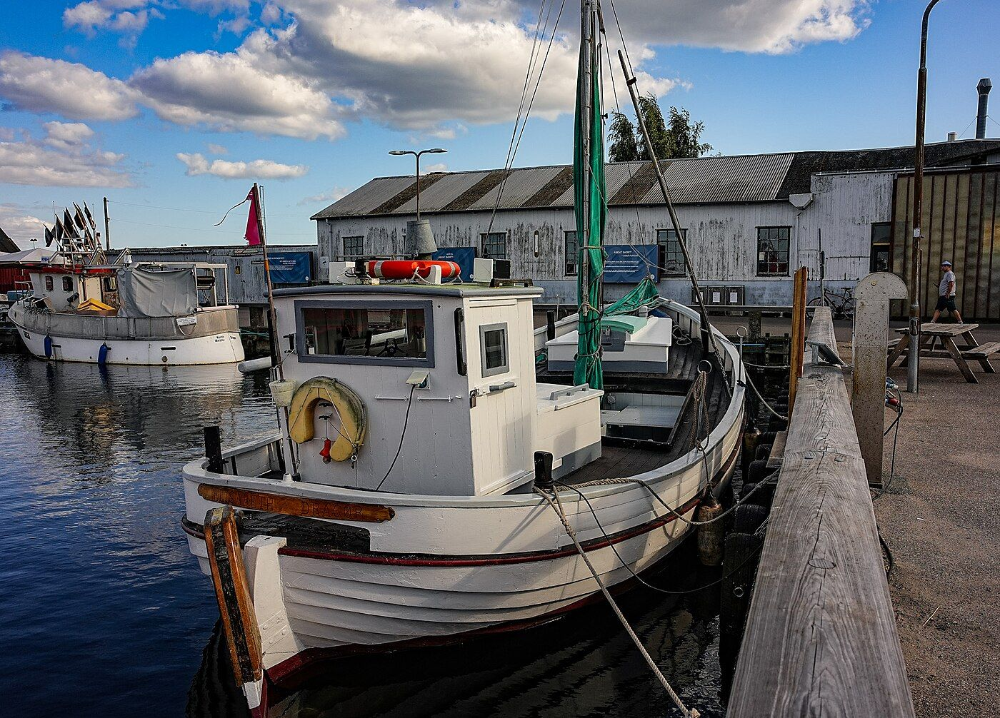
2
1933 – 1945 und die Folgen · neun Module
Ideologie, Krieg und Menschheitsverbrechen – und die Frage, wer mitgemacht hat und was danach daraus wurde.
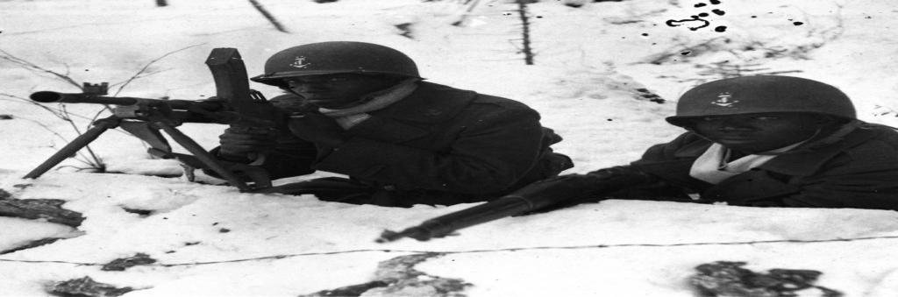
M27Die Vergessenen! Eine Globalgeschichte des Zweiten WeltkriegsDein Bild vom KriegDer ArtikelEurozentrismusStrukturbildLandkarte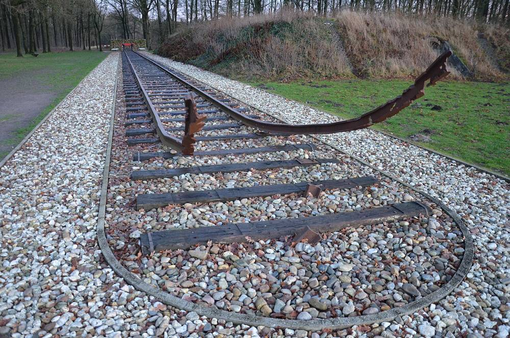
M21Es geht um Menschen – Shoa oder Holocaust?Der BriefDas WortVier MenschenDie MatrixDie Zahl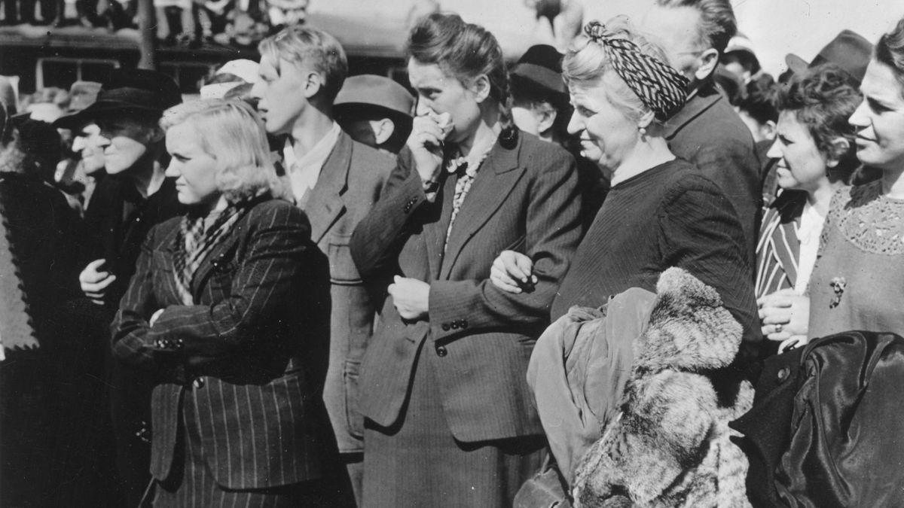
M25Leben in Ruinen und der Umgang mit SchuldDer Krieg ist vorbeiÜberleben in RuinenIm Angesicht des VerbrechensVerantwortungLandkarteBild 1 von 3: Gedenkstätte am Umschlagplatz in Warschau, 2012 (zu M21).
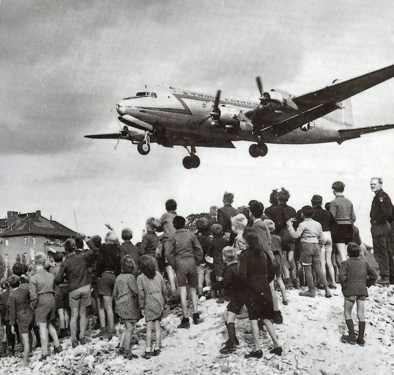
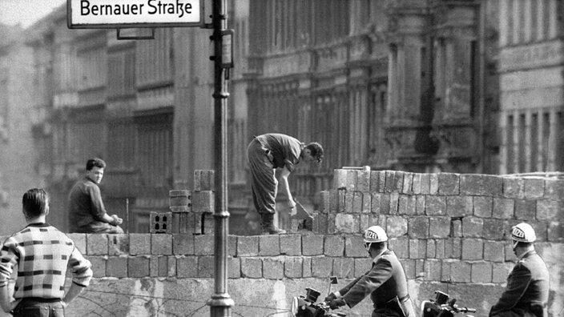
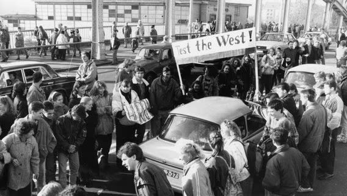
3
1945 – 1991 · neun Stunden, fünf Werkzeuge
Welchen Einfluss hatten Ideologien, Machtinteressen und Handlungsspielräume der Akteure – und wie wird dieser Konflikt heute erinnert?
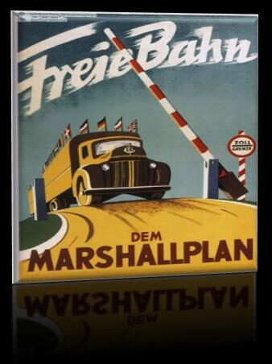
2Kommunismus gegen Kapitalismus: Truman-Doktrin und Zwei-Lager-TheorieTrumanShdanowSpiegelbildBlockbildung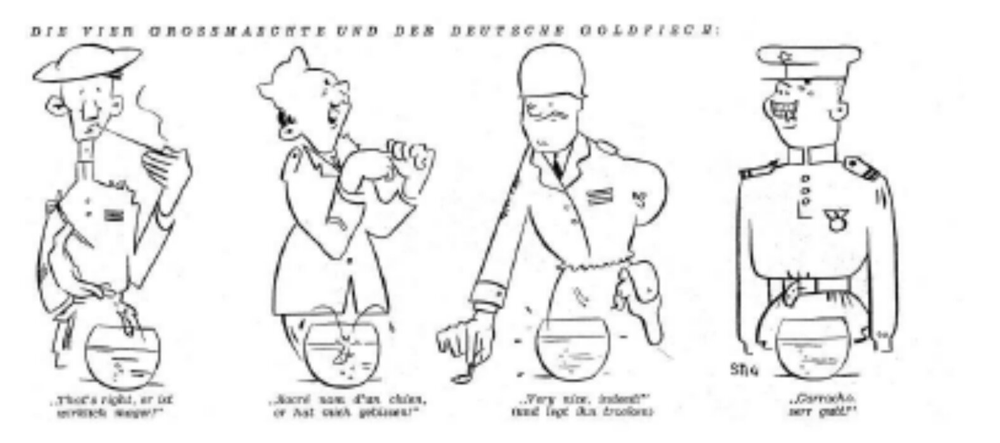
4Die doppelte StaatsgründungDer Weg zu zwei StaatenGrotewohlAdenauerVergleich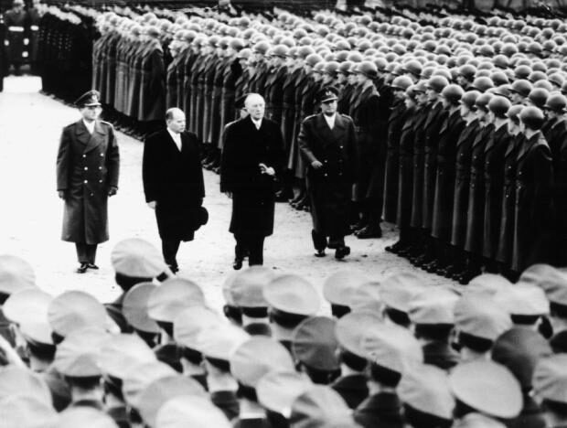
5Die Bindung der Bundesrepublik an den WestenDer StreitDie SchritteDas Urteil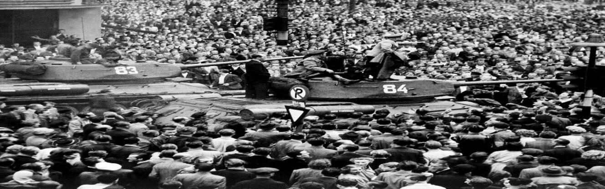
7Geschichte im Staatsdienst? Der 17. Juni 1953 im SchulbuchZwei TexteWas geschahLehrpläne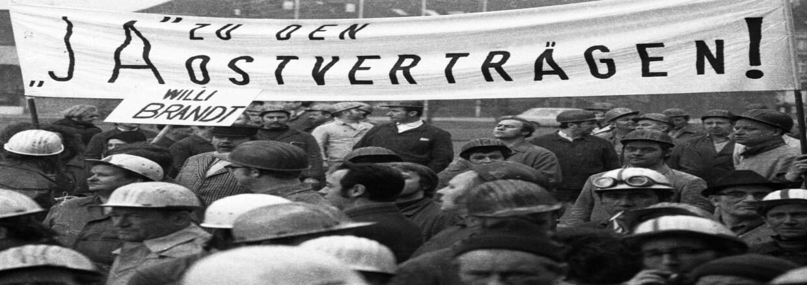
8Wandel durch Annäherung: die OstverträgeDie VerträgeDie DebatteBild 1 von 4: Potsdam, Sommer 1945 (Stunde 1).
Die kognitive Landkarte nennt Prinzipien, nach denen Geschichte entsteht. Hier siehst du, in welchen Modulen du welches Prinzip übst – quer durch die Epochen.
Wir betrachten die Vergangenheit immer im Nachhinein, aus der Gegenwart heraus.
Jede Betrachtung erfolgt aus einer Sichtweise, geprägt von Überzeugungen, Interessen und Erfahrungen.
Historische Erkenntnisse sind immer nur Ausschnitte der gesamten Vergangenheit.
Noch kein Modul, das dieses Prinzip in den Mittelpunkt stellt.
Wer Geschichte erzählt, wählt aus: Welche Quellen, Ereignisse und Personen sind wichtig?
Quellen zeigen immer nur einen Teil der Vergangenheit, und nur ein Teil der Quellen ist erhalten.
Geschichte gibt es nur als Erzählung.
Geschichte wird nicht gefunden, sondern zusammengesetzt. Aus denselben Fakten können verschiedene Geschichten entstehen.
Wer Geschichte erzählt, ist durch seinen gesellschaftlichen und kulturellen Kontext geprägt, oft unbewusst.
Diese Module haben noch keinen eigenen Landkarten-Moment.
Kante links:NationalsozialismusOst-West-Konflikt